Crinoid
1. Aorocrinus radiatus
2. Pachylocrinus globosus
3. Strimplecrinus inornatus
• Mississippian
• Hampton Formation/Maynes Creek Formation
• Le Grand, Iowa, USA
Size: 4 cm crown for the Aorocrinus
 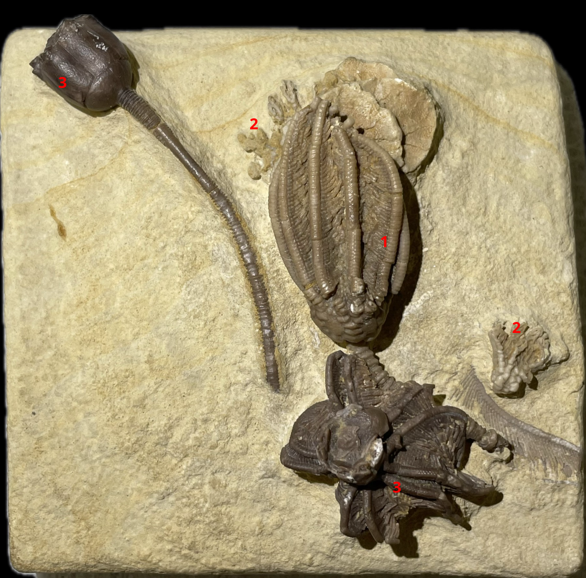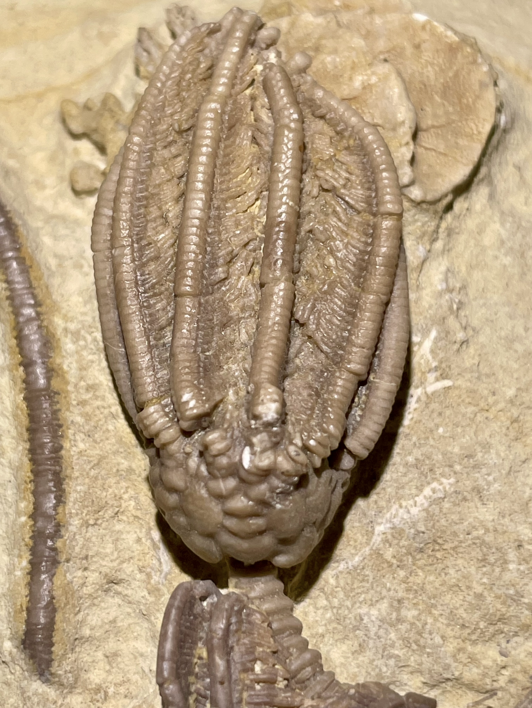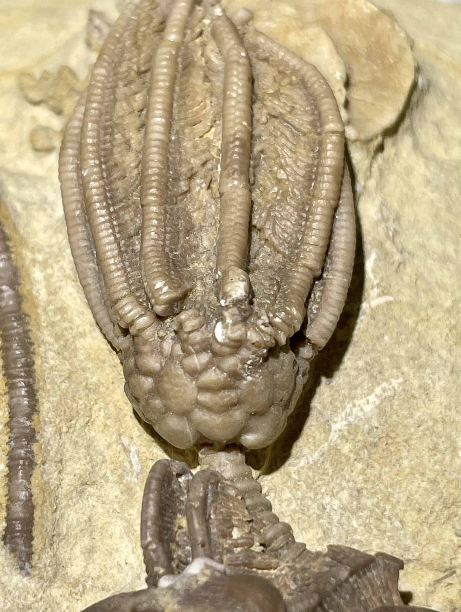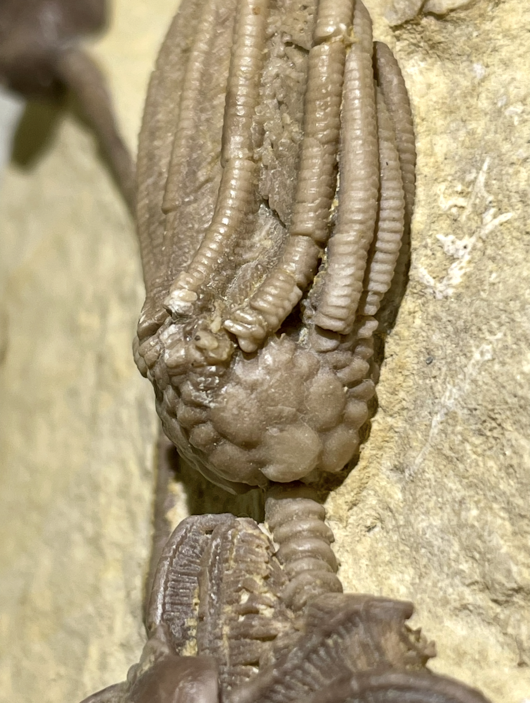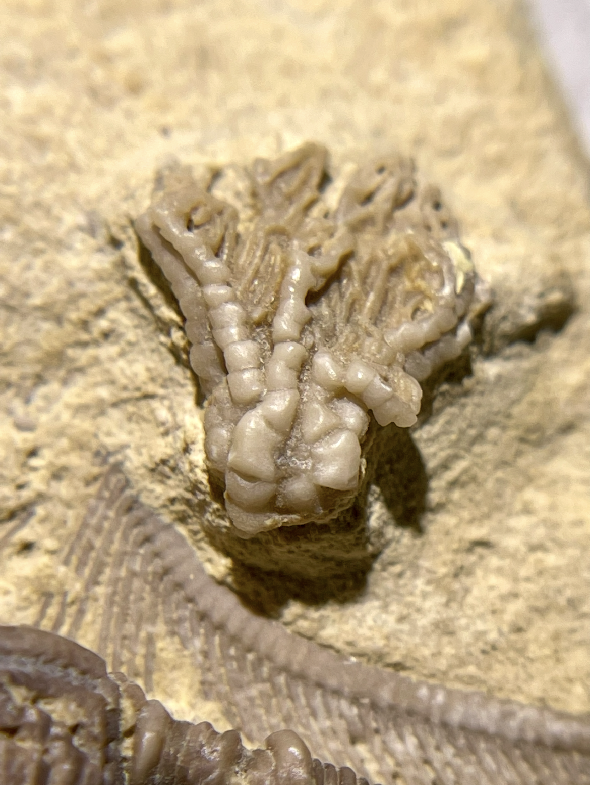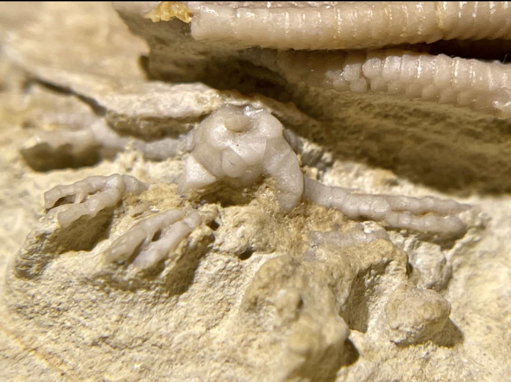
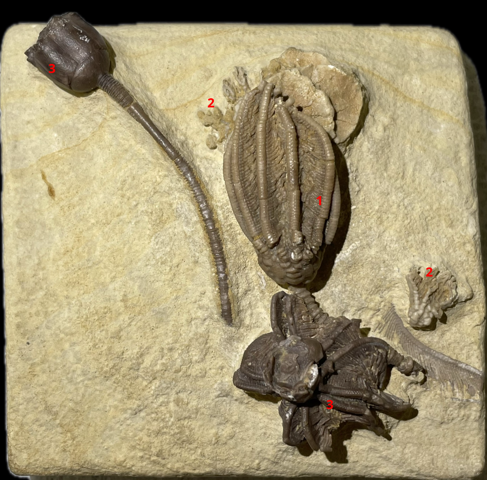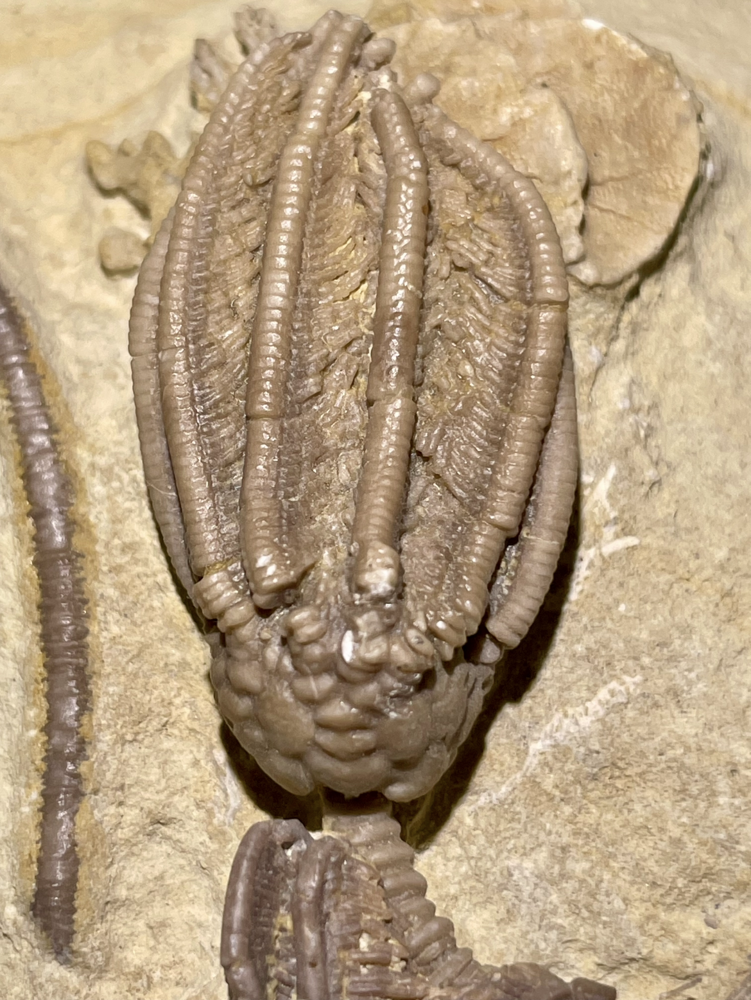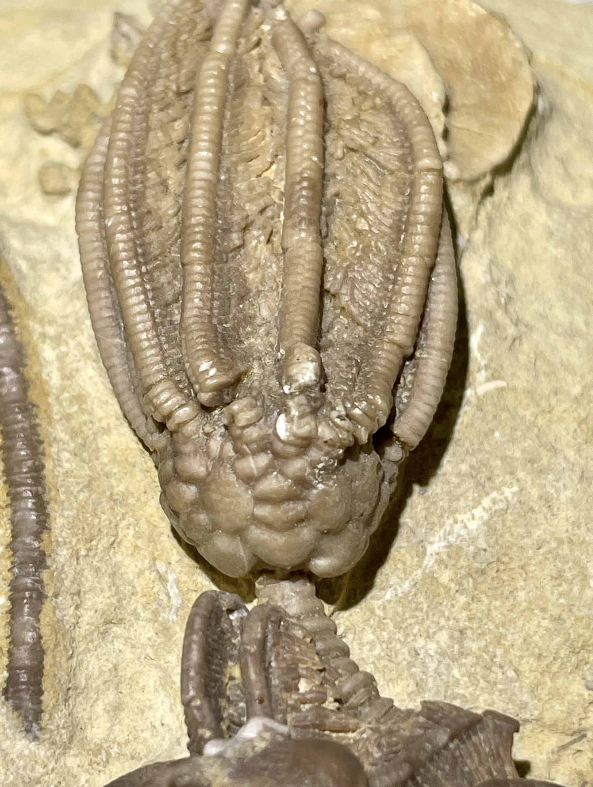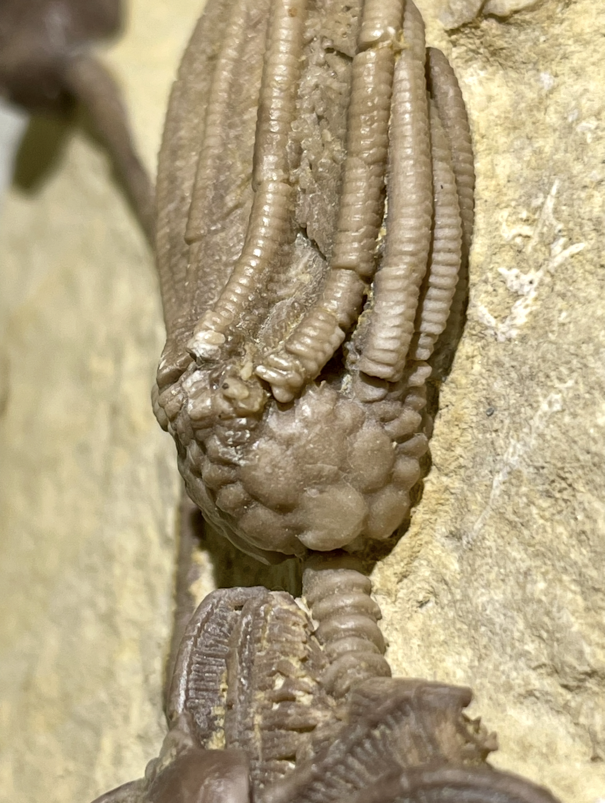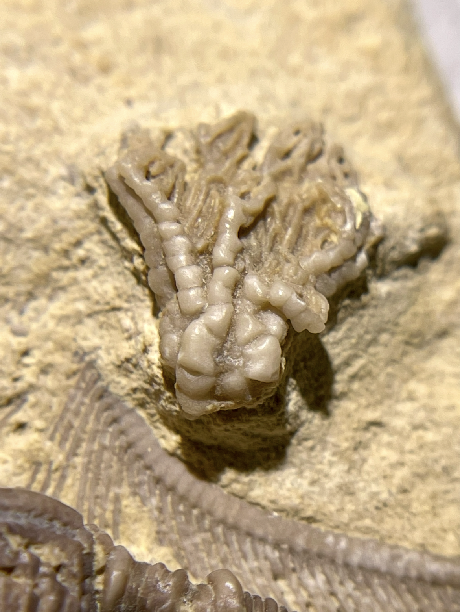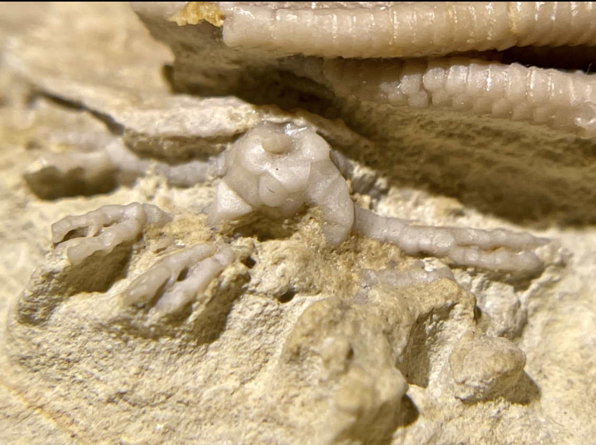